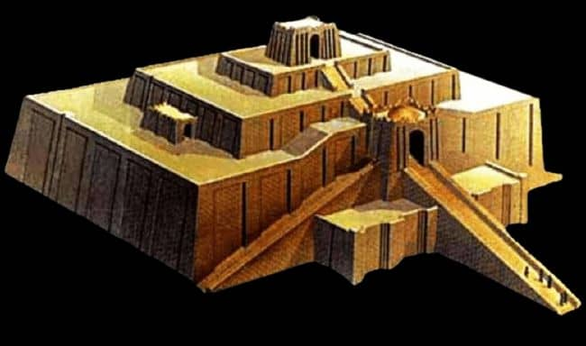
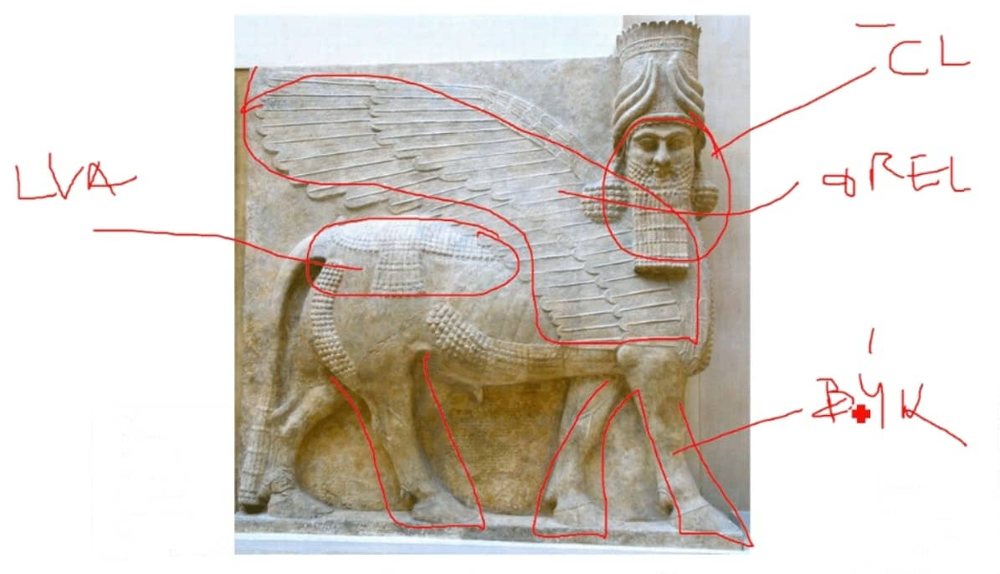
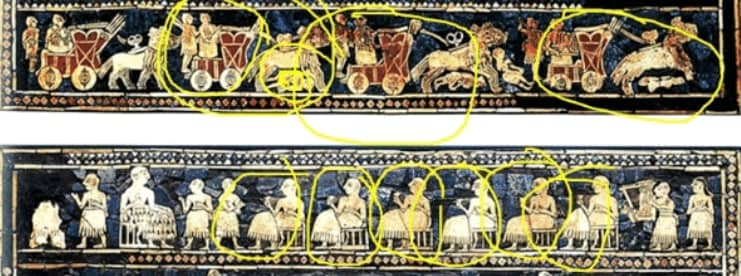

3. Umění Mezopotámie a egejské oblasti
Mezopotámie
Geografie
-
Mezopotámie → meziříčí Tygirsu a Eufratu, otevřená oblast u
hor
- území dnešního Iráku
- často “akční” oblast
- klínové písmo, rozvinutá matematika, astronomie
-
nejstarší literární památky → Epos o Gilgamešovi
- městské civilizace → Ur, Babylón
- Babylón založen kolem roku 1600 př. n. l.
- Bůh musí mít chrám a sochu
Principy
- Bohové se zobrazovali s rohy
-
Negativní představy o smrti (narozdíl od Egyptu)
-
Epos o Gilgamešovi proto vypráví o nesmrtelnosti
Architektura
- Nedostatek kamene, stavby z Cihel
- Objevení klenby
-
ZIKURAT
- stupňovitá stavba z cihel
-
nahoře chrám, rovná střecha určená pro sledování
oblohy, uvnitř sochy

Sochařství
-
ochránci tzv. LAMASSU
-
býčí tělo a nohy, lví hříva, orlí křídla, lidská
hlava

Malířství
- motiv opakování
- Pečetní válečky

Egejská oblast
Geografie
- Ostrov Kréta a Peloponéský poloostrov (jih Řecka)
- centrum - Mykény
- Příchod řeckých kmenů které přebírají místní kulturu
- měli písmo, ovšem nešlo rozluštit
- Kréta kolem roku 1400 končí z neznámých důvodů
- sošky bohyní, Labrys (objevují se i ve stř. Evropě)
Důležité pojmy
-
TAUROMACHIE
-
výjev kde mladí tančí kolem býka, proskakují mezi
rohy, dělají salta z býčích zad
- nejspíše náboženský rituál
-
SOŠKY TZV. BOHYNÍ S HADY
-
hadi v rukou, široká zvonovitá sukně, dekolt
- obnažená ňadra, neznámá pokrývka hlavy
- LABRYS (oboustranná sekera)
Architektura
-
PALÁCE
- ploché střechy
- hlavní nádvoří
-
chaotické rozmístění okolních budov (nejspíše první
motivy bludiště/labyrinty)
-
členění sloupů na 3 části
- hlavice, dřík, patka
-
nově překlad z vrchu - ARCHITRÁV
proto tzv. ARCHITRÁVOVÝ SYSTÉM
-
MEGARON
Malířství
- využití profilu stejné jak v Egyptě
-
rozdíl mezi Krétou a Athénami → Kréta neměly hradby,
protože věřili okolnímu moři a loďstvu (ostrov)
Obrázky
-
Ištařina brána
- mluvit o barevnosti
- valená klenba
-
pravá klenba
-
Chammurapiho stéla (Kamenná deska)
-
Bůh Čamaš
-
poznáme podle rohů a protože důležité
postavy sedí
- ARCHITRÁVOVÝ SYSTÉM
-
HRADBY
-
nepravá klenba
-
kameny dávali čím dál více k sobě, pak se to
osekalo a udělali zde reliéf
- pohřbení měli masky z ryzího zlata
Audio